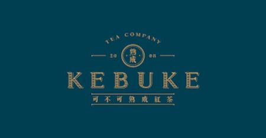

歡迎來到 可不可熟成紅茶 Welcome to KEBUKE
關於我們
菜單
相關資訊
顧客意見回饋

關於我們:
渴不渴, 可不可。 可不可意即台語
「喙乾無」
。 是在地人最親切最道地的問候 創立於
2008年
的初夏來自於台中市向上市場旁。 多年來堅持做對的事情透過一杯好茶傳遞溫暖的人情味。
地址
雲林縣虎尾鎮林森路二段299號
營業時間:
10:00 ~ 20:00
電話:
05-636-6161